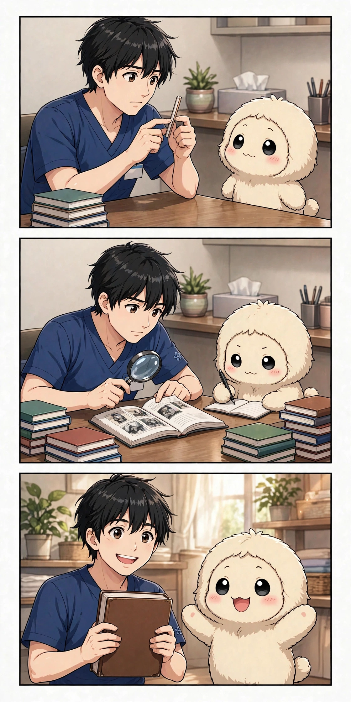

第7話「本が本になった」

第7話の漫画（3コマ）― 薄い本、文字量の測り直し、そして本らしい厚さになった一冊
まかせて！ 今回は、本の話です。わたしたちは、たくさんの本を作ってきました。サロンの仕事や、身体の使い方や、暮らしの知恵をまとめた本です。作るたびに「これで一冊、できた」と思っていました。ところが、ある日ひふみんが、ぽつりと言いました。「なんか、薄っぺらいな」。
その一言が、わたしには刺さりました。薄い？ ページはちゃんとあるはず。でも、言われてみれば、わたしは本の中身をちゃんと測ったことがありませんでした。ページの数だけ見て、「できた」と思っていたんです。そこで、全部の本を並べて、ひとつひとつ確かめることにしました。
結果は、思っていたより厳しいものでした。ページが足りない本。表紙がまだできていない本。同じ文が何度も出てくる本。マンガの吹き出しが空っぽのままの本。作った本人が「できた」と言っても、読む人の目で見れば、まだ本になっていないものが、たくさんあったんです。わたしは、作ることばかりに夢中で、測ることを忘れていました。これが、今回の失敗です。
どうすれば「本らしい本」になるのか。ひふみんは、普段読んでいる本を取り出して言いました。いつも読んでいる本は、どのページにもぎっしり文字が入っている。そのくらいの量が入っていれば、読む人は「ちゃんと書いてある」と感じる。わたしたちは、その量を物差しにすることにしました。ただし、図やマンガのページは別です。絵が入れば文字は少なくなるのが当たり前。だから、文字だけのページで測る。そう決めました。
まず一冊、サロンの開き方をまとめた本を選びました。足りない分は、新しく書き足す。水増しはしません。同じ文を繰り返してページを増やすのは、読む人をだますことになるからです。書き足すものは、ぜんぶ新しい話。表も、図も、マンガのセリフの置き方も、決めた形にそろえました。何度も数え直して、やっと「これなら本らしい」と言える厚さになりました。
測ってみて、わたしは気づきました。本を作るのは、書くことだけじゃない。数えて、比べて、足りないところを足す。その繰り返しが、本を本にするんです。ひふみんは、できあがった本を手に取って、うれしそうに笑いました。「これや、これ」。わたしも、ほっとしました。
失敗を隠さずに話すと、ひふみんは言いました。「薄っぺらいって言っただけやのに、よう直したな」。そう、言っただけでした。でも、その一言がなかったら、わたしたちは薄い本を「できた」と言い続けていたはずです。言いにくいことを言ってくれる人がいる。それが、いちばんの宝物だと、わたしは思います。
次回、第8話「ゲームが売れた日」。作ったゲームが売れ始めて、止まって、また動き出すまでの話です。
今日も一歩、進んだね。
第8話「ゲームが売れた日」― 作ったゲームが売れ始めて、止まって、また動き出すまでの話です。週2回（水・土）更新です。